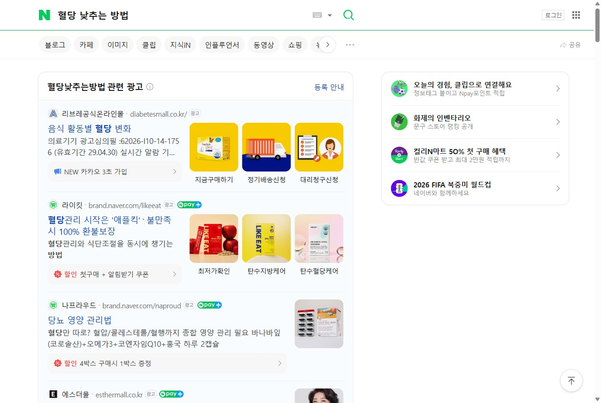
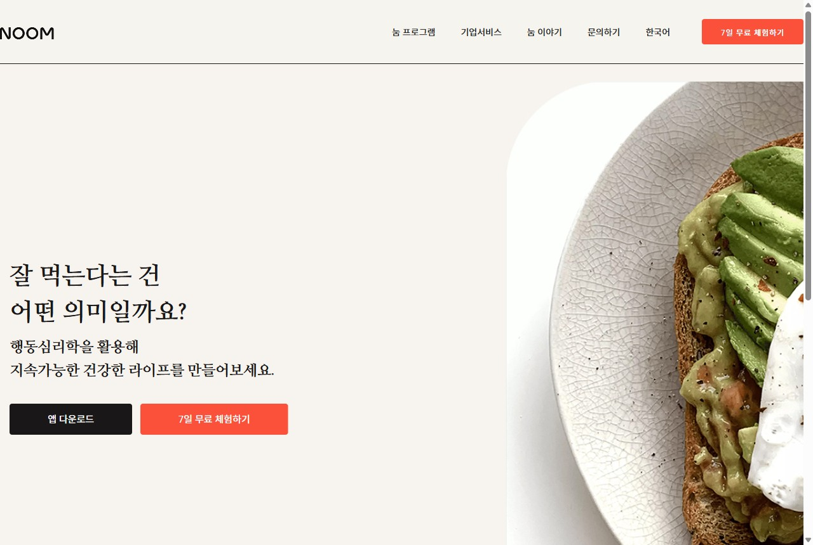
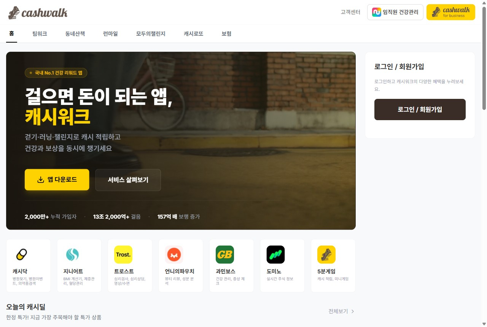
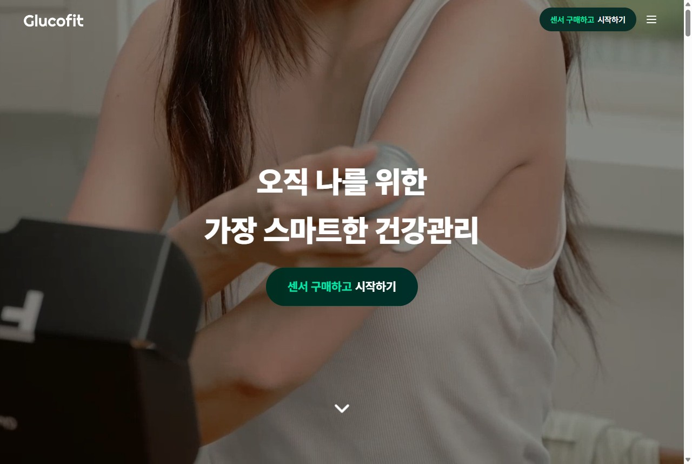

당뇨는 진료가 아니라
'매일의 관리'에서 이깁니다
관리 기능을 이식해 USP로 만들고, 당뇨 페르소나가 검색하는 곳에서 Paid·시딩으로 폭발적으로 모객합니다. 모든 전략에는 실제 캡처한 벤치마킹 레퍼런스가 붙습니다.
진료는 '가끔', 관리는 '매일' — 매일 쥔 쪽이 환자를 가진다
환자의 하루는 '관리'로 채워진다
측정·식단·복약은 매일, 진료는 분기 1회. 접점의 99%가 관리 영역.
관리툴 = '매일 여는 이유' = 모객·리텐션 입구
매일 쓰는 기능이 있어야 끌고(미끼)·머물게 하고(습관)·데이터를 쌓는다.
그 위에서 진료·재진이 '환전'된다
관리로 모은 트래픽·데이터를 비대면 진료·처방·재진으로. 관리=입구, 진료=출구.
＂당뇨 환자를 데려오는 건 '진료 광고'가 아니라 '매일 쓰고 싶은 관리 USP'다.＂
— 진료만 내세우면 '아플 때만 여는 앱', 관리를 쥐면 '매일 여는 앱'.
전제: 나만의닥터는 비대면 진료·처방·병원연결·리워드(닥터캐시·만보기) 보유 — 진료 역량은 있으나 '매일 쓰는 당뇨 관리 USP'가 비어 있다는 점이 출발점(공개정보 기반).
거대하고, 관리가 비어 있고, 규제까지 우리 편
당뇨는 분기 재진·90일 처방이 질환에 내장(1인 연 진료비 ≈ 30.7만 원)된 LTVLTV(고객 생애 가치) · 평생 관리 질환이라 한 환자의 누적 가치가 본질적으로 길다.가 긴 시장.
출처: 대한당뇨병학회 Diabetes Fact Sheet 2024, 한화생명 실손분석 2025, 건강보험심사평가원 당뇨 진료현황 2024, 보건복지부 비대면진료 제도화(2026.12.24 시행). 환자 수는 추정치.
관리 앱은 진료가 없고, 우리는 관리 USP가 없다
| 구분 | 닥터다이어리 | 파스타 (카카오HC) | 글루코핏 | 나만의닥터 |
|---|---|---|---|---|
| 매일 관리 | ○ 기록·식단·커뮤니티 | ○ CGM·AI코칭 | ○ 의사·AI 코칭 | ✕ 당뇨 특화 관리 없음 |
| 진료·처방 | ✕ 비의료 | ✕ 코칭=안내 | ✕ 코칭=안내 | ○ 비대면 진료·처방 |
| 약점 | 치료연결 단절 | CGM 비용·진입장벽 | 고비용→이탈, 고령 소외 | 관리 USP만 채우면 유일 사업자 |
경쟁사는 "병원 가세요"에서 끊기고, 우리는 매일 쓸 이유가 없다. 빈칸은 하나 — 우리에게 '당뇨 관리 USP'를 채우는 것.
출처: 각 사 App Store·공식, 바이오타임즈·메디칼타임즈·서울경제·디라이트. CGM 급여는 1형·인슐린 한정(2형 대다수 비급여). 단가·리텐션 일부 추정.
"매일 관리 + 필요할 때 즉시 진료"를 한 앱에서
관리 앱 (닥다·파스타·글루코핏)
+ 위험할 때 즉시 비대면 진료·처방
+ 분기 재진 자동 루프
비대면진료 앱 (기존)
USP = "관리하다 위험하면 그 자리에서 의사에게 연결되는 유일한 당뇨 앱". 관리 앱은 따라올 수 없고(의료법), 진료 앱은 관리 자산이 없다.
이 관리 기능들을 가져와 '진료로 닫히는' 당뇨케어로


이식의 핵심은 단 하나 — '다음 행동'의 종착지를 영양제·코칭이 아니라 '비대면 진료·재진'으로 치환. 그러면 동일 관리 엔진이 의료 전환 깔때기가 된다.
실제 서비스 캡처(필라이즈·파스타몰·닥터다이어리, 2026.6). 우선순위(가설): 1순위 AI코칭+식후혈당, 2순위 당뇨리포트, 3순위 챌린지(기존 닥터캐시 결합).
관리 USP는 폭발적 모객의 '입구'입니다
미끼가 강하다
"진료받으세요"는 거부감, "무료 혈당관리"는 누구나 시작 — 진입 마찰↓.
전환이 자연스럽다
관리 데이터가 진료 필요를 스스로 증명 → 광고가 아니라 데이터가 설득.
리텐션이 붙는다
매일 여는 습관 + 만성질환 재진 = 단발 모객이 LTV로 환전.
그들이 검색하는 곳엔 '센서·영양제 광고'뿐, 진료가 없다

＂혈당 낮추는 방법＂ 검색 시 상단 광고는 전부 리브레 센서몰·혈당관리 영양제(라이킷 '100% 환불보장')·당뇨 영양제 — '관리하다 위험하면 의사에게'를 파는 곳이 한 곳도 없다. 이 검색 결과의 빈칸이 정확히 우리 USP의 자리(실제 캡처, 2026.6).
검색·노출 신호별로 소구점을 다르게 친다
| 채널 | 타겟·신호 | 광고 소구점 (메시지) | 소재·랜딩 |
|---|---|---|---|
| 네이버 검색광고 | "혈당·당화혈색소·공복혈당·당뇨 초기증상" 검색자 | "측정만 하지 말고, 위험하면 바로 의사에게 — 처방까지 한 앱에서" | 파워링크 → 무료 진단 랜딩 |
| 메타 (IG·FB) | 45–65 당뇨·전당뇨 관심 + 보호자(자녀) 리타겟 | "부모님 혈당, 멀리서도 챙기세요" / "집에서 혈당관리+처방" | 환자 후기 릴스·캐러셀 |
| 유튜브 | 당뇨 콘텐츠 시청자 · 인스트림/디스커버리 | "내 혈당이 음식에 어떻게 반응하는지 2주만 보세요" | 30초 환자 후기 영상 |
| 카카오 모먼트 | 중장년 대량 도달 · 카카오 검색 | "3분 당뇨위험 자가진단 → 결과 무료 리포트" | 비즈보드 무료진단 훅 |
공통 원칙 — 소구의 끝은 항상 관리 미끼(무료 진단·관리툴)로 보내고, 진료·처방은 데이터가 쌓인 뒤 제안. ⚠ 의료광고·식약처 규제상 효능 단정·"당뇨 완치" 류 표현 금지.
광고가 닿기 전, 환자가 모인 곳에 먼저 스며든다
| 시딩 채널 | 어디에·누구에게 | 소구·콘텐츠 톤 |
|---|---|---|
| 네이버 카페·지식인 | 당뇨 환자/보호자 카페('당뇨와 친구들' 등)·맘카페 부모건강, 지식인 "당화혈색소 높을 때" | 정보형 답변 + 실사용 후기로 "관리하다 위험하면 비대면 진료" 자연 노출 |
| 유튜브·인플루언서 | 당뇨 관리 유튜버 · 약사/의사 크리에이터 | 관리 USP 체험 협업 — '내돈내산' 진정성 톤 |
| 인스타·블로그 체험단 | 혈당 챌린지 참가자 UGC | "2주 혈당 인증" 해시태그 챌린지 + 닥터캐시 리워드 |
| 약국·검진센터(오프라인) | 당뇨약 수령자·검진 이상소견자 | 관리툴+재진 쿠폰 QR 배포 → 비대면 재진 연결 |
시딩의 핵심은 '광고'가 아니라 '후기·정보'로 신뢰를 먼저 쌓는 것. ⚠ 의료광고법상 환자 유인·후기 광고 규제가 있어 정보성·체험 톤과 표기 가이드를 반드시 준수.
레퍼런스: 닥터다이어리 커뮤니티(환자 UGC 자산화), HD메디 아이당뇨(약국 거점), 토스/캐시워크(리워드 기반 UGC). 채널·카페명은 예시.
채널에 실을 오퍼(미끼)마다 검증된 레퍼런스를 붙였습니다
| 오퍼 전략 | 벤치마킹 레퍼런스 | 가져오는 한 가지 | 관리 USP와 결합 |
|---|---|---|---|
| ① 무료 진단 퍼널 | Noom | 가격 노출 전 commitment 축적 | 당뇨위험 진단 → 무료 관리 → 고위험 진료 |
| ② 리워드 미션 | 캐시워크·토스 | 일상 건강행동을 캐시로 보상 | 기존 만보기·닥터캐시를 혈당·복약 미션에 |
| ③ 챌린지 환급 | 챌린저스·다노 | 예치금 손실회피로 행동 강제 | 혈당 챌린지 = 진성 환자 + 관리 습관 |
| ④ CGM 체험단 | 글루코핏·파스타 | 실측 데이터의 충격 = 전환 트리거 | 체험 → 충격 → 처방·코칭 (소구 한정) |
| ⑤ 추천·후기 바이럴 | 토스 추천·닥다 커뮤니티 | 추천 리워드 + UGC 신뢰 | 가족 당뇨 추천(부모-자녀) + 후기 |
| ⑥ 오프라인 제휴 | HD메디·삼성생명 | 확진 고밀도 풀 직접 송출 | 검진·약국 수령자에 관리툴+재진 쿠폰 |
다음 2개 슬라이드에서 핵심 4개를 실제 캡처 + 적용으로 상세화. 출처: 각 레퍼런스 사례.
무료 진단 퍼널 + 리워드 미션 — 레퍼런스 캡처

우상단 "7일 무료 체험" = 진입 미끼
"걸으면 돈" · 2,000만 가입두 전략 모두 기존 자산으로 6개월 내 즉시 구현 → 비용·시간 효율 최고. 캡처: noom.com·cashwalk.com(2026.6).
챌린지 환급 + CGM 체험단 — 진성 모객·임팩트

팔에 부착한 CGM = 실측 충격전략 4는 임팩트 최대지만 규제·원가 리스크 → 소규모 A/B 선행. 캡처: glucofit.co.kr(2026.6). 챌린저스는 사이트 접속 불가로 개념 카드 대체.
관리 USP를 월 구독(MRR)으로 — 단발 진료를 넘어선다
케어 베이직 · 관리
AI 식후혈당 코칭 · 당뇨리포트 · 복약/측정 알림. 무료 사용자를 업셀하는 입구.
케어 플러스 · 관리+진료
+ 비대면 재진 우선예약재진 우선예약 · 구독자에게 비대면 재진 슬롯·전문가 응답을 우선 제공. 진료가 구독 안으로 들어오는 핵심. · 전문가 채팅 Q&A · 처방 리필 관리. USP가 완성되는 등급.
케어 프리미엄 · CGM 번들
+ CGM 센서 정기배송 · 심화 코칭. 필라이즈 슈가케어슈가케어 · 필라이즈의 'CGM 센서 정기배송 + 멤버십' 번들(약 10만 원대). 하드웨어+구독 결합 모델.형 결합.
당뇨는 평생 관리라 이탈해도 의료적 필요로 돌아온다 — 구독과 궁합 최상. 단발 진료 수수료를 예측가능한 반복매출(MRRMRR(월 반복매출) · 매달 들어오는 구독 매출. 변동 큰 단발 매출과 달리 예측 가능해 사업의 '바닥'을 만든다.)으로 바꿔 LTV를 극대화한다.
가격은 벤치마크 기반 가설 — 필라이즈 플러스 월 15,900원·슈가케어 번들(약 10만 원대), 글루코핏 멤버십, Noom 구독. 실제 단가는 지불의향(WTP) 테스트로 확정 필요.
당뇨를 시작으로 만성질환 관리를 구독 라인업으로 확장
관리(반복 재진·기록)가 필요한 만성질환 후보 — 당뇨로 검증 후 순차 확장
🩸 당뇨 ★시작
혈당·식단·HbA1c
💗 고혈압
혈압 기록·약 리필
🧈 이상지질혈증
콜레스테롤·재검
⚖️ 비만·체중
체중·식이(GLP-1 분리)
🦋 갑상선
호르몬·정기 추적
🦴 골다공증
중장년 여성 타겟
구독 패키징 전략 — 묶을수록 객단가가 오른다
대사증후군 통합 케어
당뇨+고혈압+이상지질혈증은 동반유병동반유병(comorbidity) · 한 환자가 여러 만성질환을 함께 앓는 것. 대사증후군군은 당뇨·고혈압·고지혈이 같이 온다.↑ → 한 환자가 여러 질환을 묶음 구독.
가족 케어 구독
부모 관리 + 자녀 모니터링 대시보드. 보호자(김도윤)를 결제자로 끌어온다.
단일질환 구독
당뇨케어 단독부터 시작 → 검증 후 라인업 순차 확장.
핵심 논리: 만성질환은 동반유병이 흔해 한 명이 여러 구독으로 확장(cross-sell) → ARPU·LTV 상승. 당뇨로 엔진을 검증한 뒤 동일 구조를 타 질환에 복제. 질환 선정은 비대면 처방 가능·재진 빈도 기준 가설.
구독이 성립하려면 이 5가지가 구축돼야 합니다
① 데이터 수집·연동
혈당·혈압·체중·복약 기록, CGM·가정용 기기 연동, 국가건강검진 기록 연동.
② 인텔리전스
질환별 AI 코칭·맞춤 리포트, 위험신호 자동 감지·알림(저혈당·목표 미달).
③ 의료 연결
비대면 재진 우선예약, 처방 리필 자동화, 전문가(의사·영양사) Q&A, 병원·약국 연계.
④ 리텐션·운영
복약·재검 리마인드, 가족 공유 대시보드, 닥터캐시 리워드 연계, 구독 결제·등급·해지 관리(처닝처닝(churn) 관리 · 구독 해지 방지. 해지 시점 예측·리마인드·다운그레이드 옵션으로 이탈을 줄인다. 방지).
⑤ 신뢰·규제
민감 의료정보 보안·동의 관리, 비의료/의료 경계와 의료광고법 준수 — 구독 고지·환불 정책 명확화(전자상거래법).
우선 구축순서(가설): ①데이터·②AI코칭(USP 핵심) → ③의료연결(플러스 등급 성립) → ④⑤(스케일·리스크 관리). 기존 비대면진료·리워드 자산이 ③④의 토대.
구독 도입 시 연 8억~84억 매출 증분 (가정 기반 3 시나리오)
| 항목 (6개월 후 기준) | 보수 | 기본 | 공격 |
|---|---|---|---|
| 당뇨 관리 활성자(무료) | 15만 | 25만 | 40만 |
| 무료→구독 전환율 | 3% | 5% | 8% |
| 구독자 수 | 4,500 | 12,500 | 32,000 |
| 블렌디드 ARPU(월) | 15,000원 | 18,000원 | 22,000원 |
| 월 구독매출(MRR) | 약 0.7억 | 약 2.3억 | 약 7.0억 |
| 연 환산 구독매출 | 약 8억 | 약 27억 | 약 84억 |
구독 매출은 시작일 뿐
동반 증분 = ① 구독자 분기 재진 연결 수수료 ② CGM·식품 커머스 마진 ③ 리텐션↑로 LTVLTV · 기본 시나리오 ARPU 18,000원 × 평균 구독 10개월 ≈ 1인 18만 원. 단발 진료 대비 수 배. 약 18만/인(기본).
왜 중요한가
단발 진료 매출의 변동성을 예측가능한 MRR + 동반 진료·커머스로 바꿔 매출의 '바닥'을 만든다 — 규제·시즌에 덜 흔들리는 구조.
⚠ 약속이 아닌 시뮬레이션. 전환율 3~8%는 Noom·필라이즈 freemium 벤치 가설, ARPU는 경쟁 구독가 기반, 활성자는 공개 MAU(100만+)·6개월 모객 목표 가정. 실제 내부 데이터로 보정 필수.
이 4가지는 단기 숫자를 올리고 USP를 망가뜨립니다
관리 USP를 깔고 채널 모객을 단계적으로 폭발시킨다
USP·미끼 세팅
- 당뇨 관리 MVP(식후혈당·AI코칭) 베타
- 무료 당뇨위험 진단퀴즈 + 랜딩
- 네이버 SA·카카오 무료진단 훅 ON
- 만보기·닥터캐시를 당뇨 미션으로
모객 폭발
- 혈당 챌린지+캐시 환급 시즌1
- CGM 2주 체험단(당뇨 한정) A/B
- 메타·유튜브 후기 소재 풀퍼널
- 카페·지식인 시딩 + 가족추천
환전·확장
- 재진 자동 푸시(약·재검 시점) 정식화
- 검진·약국·보험 제휴 파일럿
- 이긴 채널 스케일업 + 신환유치 결합
모객 '수'가 아니라 '관리→진료→재진 환전'을 본다
이 지표들이 함께 오르면 '사오는 모객'이 '관리로 붙잡아 진료로 환전되는 모객'으로 바뀌고 있다는 뜻 — 성공 정의입니다.
관리를 USP로 쥐고,
그들이 검색하는 곳에서 모읍니다
관리 기능을 이식해 "매일 관리 + 즉시 진료"라는 누구도 못 가진 USP를 만들고, 당뇨 페르소나가 검색하는 채널에서 Noom·캐시워크·글루코핏 등 검증된 장치로 모객해, 6개월 안에 '관리로 모아 진료로 환전'하는 공식을 증명하겠습니다.